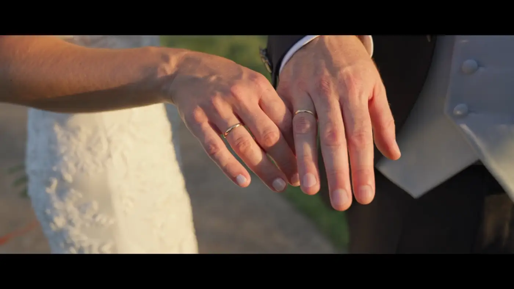

LUIS MORENO FILM
STORYTELLING THROUGH CINEMAProducción audiovisual con mirada cinematográfica.
01 Estudio
Producción audiovisual, del concepto a la entrega final.
Realizo y produzco películas de boda, publicidad, vídeo corporativo, videoclips y piezas documentales para marcas, artistas, familias e instituciones. Cada proyecto se aborda con la misma exigencia: concepto claro, fotografía cuidada, sonido real y un montaje que respeta al espectador.
Trabajo entre España y el Algarve, y también me incorporo como profesional a producciones de terceros cuando el proyecto lo pide.
02 Trabajo seleccionado
Proyectos destacados
VER TODOS LOS PROYECTOS


04 Colaborar
Dos formas de trabajar conmigo
Producción integral
Desarrollo y producción completa para clientes directos: empresas, marcas, artistas, parejas e instituciones. Del guion y el plan de rodaje al montaje, la corrección de color y la entrega en los formatos que necesites.
VER SERVICIOSEquipo de producción
También trabajo contratado por otras productoras y realizadores: cámara, sonido, iluminación y producción. Si buscas un perfil técnico fiable para un rodaje en España o en el Algarve, este es tu bloque.
VER CRÉDITOSProductoras y realizadores
¿Necesitas equipo técnico para el próximo rodaje?
- Operador de cámara
- Segunda cámara
- Asistente de cámara
- Sonido directo
- Iluminación / Gaffer
- Asistencia de producción
Disponibilidad para rodajes en Huelva, Sevilla, Andalucía, resto de España y Algarve.
Me incorporo a producciones externas con rol definido y responsabilidad de área. Experiencia reciente en publicidad, videoclips, largometraje y eventos, en producciones rodadas en España, Portugal y Latinoamérica.
05 Sobre mí
“La cámara es lo último que importa. Primero hay que saber mirar.”
Soy Luis Moreno, realizador y productor audiovisual con base en Huelva y ámbito de trabajo entre España y el Algarve. Dirijo mis propias producciones y, en paralelo, sumo como técnico en equipos de otras productoras — cámara, sonido, iluminación, producción. Ese doble recorrido me da algo poco común: criterio de autor y oficio de equipo.

Cuéntame el proyecto.
Bodas, marcas, música, documentales o un hueco en tu equipo de rodaje. Respondo personalmente a cada mensaje.
ESCRIBIR UN CORREO →